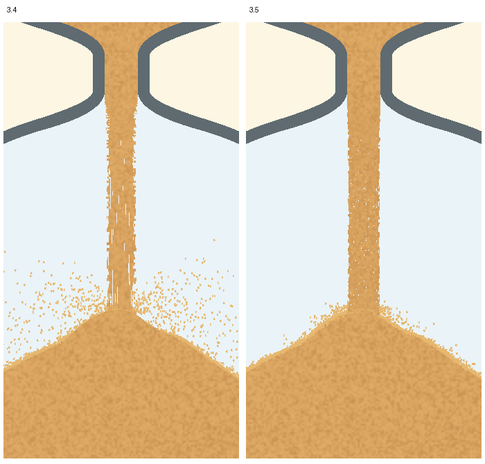
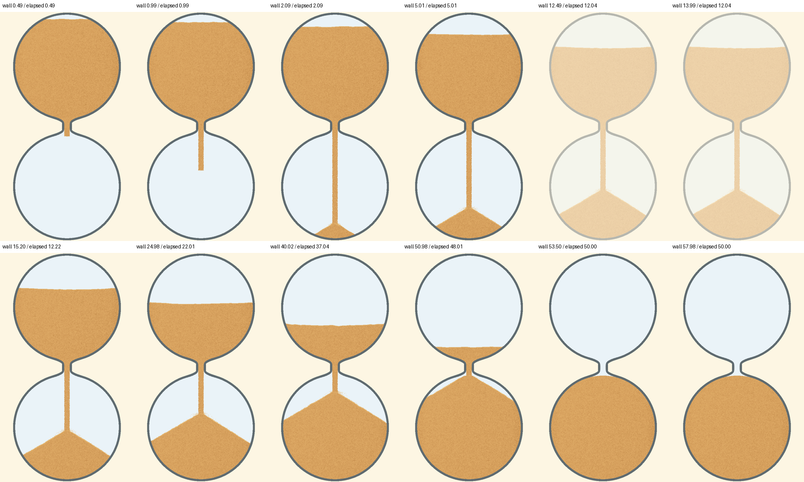
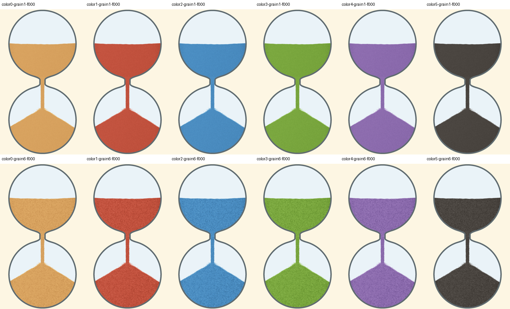
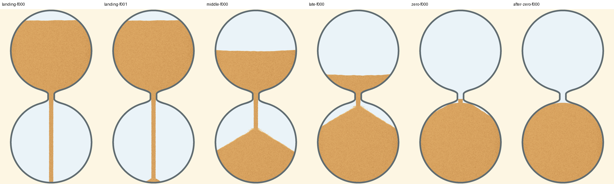

本次解决 3.4 仍保留长线、长直空隙和大范围飞溅的问题。复用既有沙量与主沙粒运动， 替换沙柱绘制覆盖，并缩短飞溅装饰轨迹。以下均来自真实隐藏 PC 画布，无生成沙子或补帧。

| 检查 | 结果与边界 |
|---|---|
| 形态 | 高分辨率同一取样区的最长竖向背景缝由48像素缩短至4像素；中心覆盖约91%→99%，保持饱满。 |
| 阶段与配置 | 400×800、1080×1848各55帧，含六配色、颗粒档位1/6、起步、落地、暂停恢复、短周期与归零后在途沙。 |
| 保留项 | 54组前后对照主沙粒数组、沙量账本、玻璃几何相同；沙柱、颈口与飞溅实际覆盖之外的像素不变。短周期已记录飞溅小矩形，避免把其覆盖当作深层沙体改动。 |
| 收尾与回退 | 计时归零后颗粒相位继续推进；暂停画面逐像素相同；强制绘制失败的Line回退完成4帧检查。 |
| 范围 | 仅PC外观与相邻状态；没有音频、帧率、Android设备或全应用验收结论。 |
50秒计时，墙钟约12秒暂停、15秒恢复，继续记录到60秒及落定。可变帧间隔按实际墙钟保存；录制开销不能用于测性能。沙漏画布取证，不含应用按钮或音频。



原3.4长缝画面会被新判据拒绝。两段未刷新画布的早期录像已作废并保留本地，不纳入本页或发布证据。 原3.4验收记录保留；它只能证明当时颜色变化受控，不能证明本次颗粒形态目标达成。